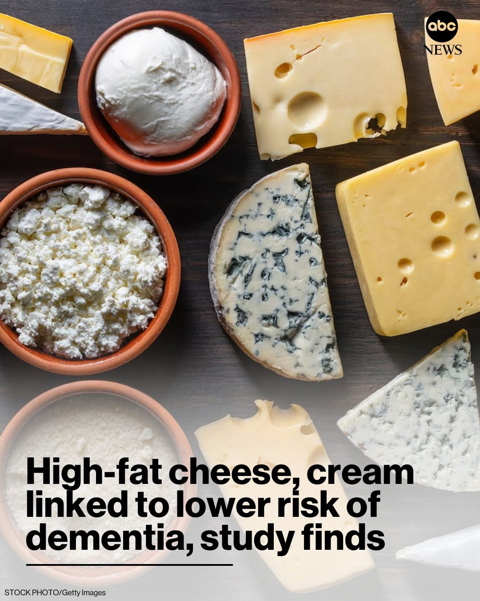

Full-fat cheese and cream linked to lower dementia risk over 25 years (observational)
Louis comments on a news-covered observational study in which regular higher-fat cheese and cream, but not low-fat versions, butter or milk, were linked to lower dementia risk over 25 years. He cautions about confounding and reverse causality and notes dairy saturated fat, especially fermented dairy, may differ from red-meat saturated fat.